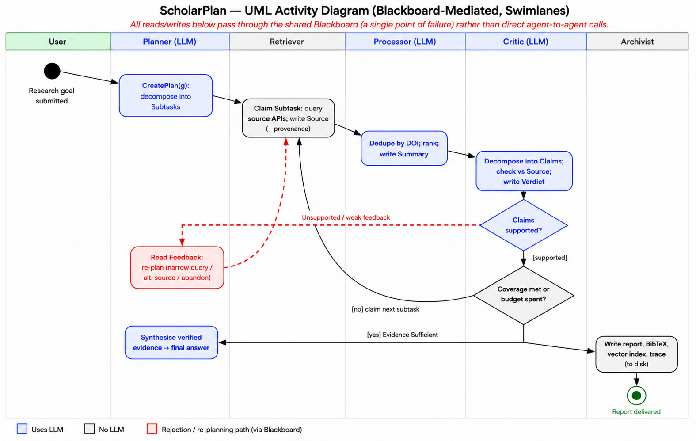
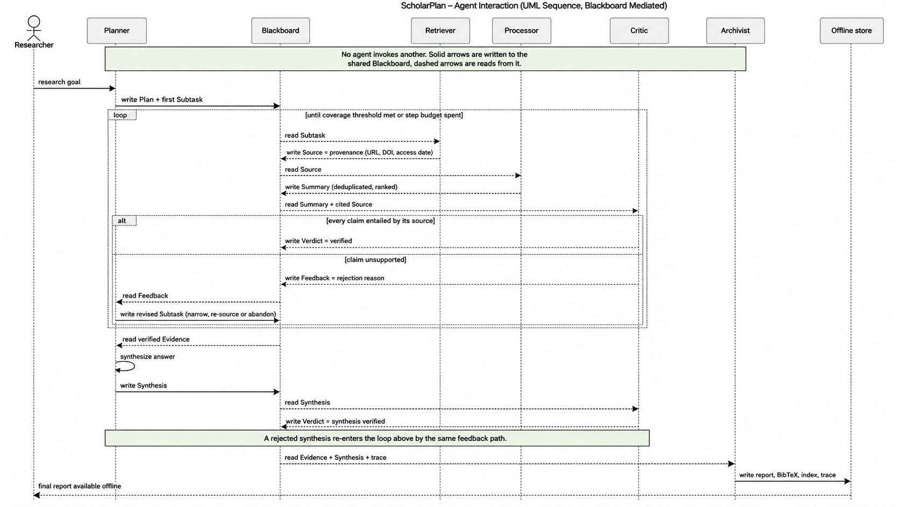

ScholarPlan: an LLM-powered planning agent for academic research – group design proposal, my contribution and tutor feedback.
ScholarPlan: design proposal (Unit 6, group assessment, 20%)
Brief: as a team of agent consultants, design an LLM-powered planning agent for academic research and information gathering. The agent must decompose a research goal, retrieve information from online sources, process it and store the results for later use. The report had to justify the requirements, design decisions, development approach and anticipated challenges from the literature, and include at least two diagrams.
Our design
- Hybrid architecture: one deliberative LLM Planner and four reactive specialists (Retriever, Processor, Critic, Archivist), keeping retrieval, processing and critique as separate failure surfaces (Wooldridge, 2009).
- Blackboard coordination: agents never call each other. They read and write a shared SQLite blackboard (Hayes-Roth, 1985), so every intermediate result is persistent and inspectable.
- ReAct planning with re-planning: the Planner interleaves thought, action and observation (Yao et al., 2023), and reads written feedback from rejected results before re-planning (Shinn et al., 2023).
- Independent verification: a separate Critic model checks that each claim is supported by its cited source, following the argument that LLM plans need external verifiers (Kambhampati et al., 2024).
- Development approach: Scrum sprints, with agents specified as roles with responsibilities and permissions, following the Gaia methodology (Wooldridge, Jennings & Kinny, 2000).

Figure 1 (from the report): five role-specialised agents coordinating through the shared blackboard.

Figure 2: activity view, with the Critic-rejection re-planning loop dashed.

Figure 3: sequence view; agents interact only through the blackboard.
My contribution
Member A developed the agent model and technology stack on which the design is based, and did the final review and submission. Member B produced the system-design options and diagrams. My role was to write and integrate:
- I revised Member A's system design and wrote Task 2.
- I volunteered to write the first draft of the report, drafted it in full and integrated the team's material, following Member A's stack where drafts differed.
- I led the final revision: I moved the figures into the body to meet the brief, strengthened the challenges section with cited mitigations, made terminology consistent across text and diagrams, and brought the report close to the word limit.
- I helped schedule calls across our time zones and followed up to keep the review moving towards the deadline.
Team communication log
Summarised from the team's WhatsApp group and Zoom calls (August–September 2026). Names and contact details are removed. The calls were not minuted, so only their dates are recorded.
| Date | Activity and decisions |
|---|---|
| 11 Aug | I joined the group chat; the team had already met by call and met weekly from then on. |
| 14 Aug | Zoom call (rescheduled from 13 Aug so that everyone could attend). Members A and B shared working documents. |
| 19 Aug | Scheduling: I proposed Monday 24 Aug at 5 pm UTC so that all members could attend; agreed. |
| 23 Aug | I updated the system design drafted by Member A and shared my Task 2 text for review before the call. Member A also shared a draft, so we had two options to compare. |
| 24 Aug | Zoom call. Member B shared Task 1. |
| 28 Aug | I shared a combined document; where our drafts differed technically, I followed Member A's Azure/GPT stack. Member B shared two more system-design options. I could not attend that day's call at short notice and offered to write the first draft of the paper; the call moved to the next day. |
| 29 Aug | Zoom call (3 pm UTC). |
| 30 Aug | Member B shared a further diagram option; I started drafting the paper. |
| 2 Sep | I shared the full draft for review and invited comments or direct edits. |
| 3 Sep | Member A pointed out that the brief does not allow appendices to extend the report. I proposed moving the figures into the body, citing mitigations as well as problems in Section 5 and justifying the API scope in Section 2.1. I also flagged inconsistent naming (‘LLM Planner’ vs ‘Project Manager’), and the team standardised on ‘Planner’. I then completed the revision: figures in the body, mitigations cited, conclusion extended and the text cut to 1,086 words excluding references. |
| 4 Sep | Member A added final changes, which I approved; the team updated Figure 1 so that all agent links ran through the blackboard, and Member A submitted the report. |
| 5 Sep | We agreed to use the 1–5 scale of the Module Resources peer evaluation template, justifying any extreme scores. |
Tutor feedback
The tutor described the domain knowledge as outstanding and praised the use of literature, the modular architecture with SQLite as a shared blackboard, the Critic verifier for reducing hallucinations, and the realistic treatment of rate limits, model selection and cost. Three areas for improvement were identified:
- Add a static structural view, such as a UML class diagram.
- Replace broad evaluation criteria with measurable targets (test queries, deduplication thresholds, Critic precision and recall).
- Define fallback rules for repeated conflicts or rejections, such as a limit of three re-planning attempts per subtask.
I addressed all three in my implementation; see the Individual Project page.
Reflection (Rolfe et al., 2001)
What? I took the writer and integrator role in a virtual team spread across time zones.
So what? Integrating other people's work meant making judgement calls, such as following Member A's stack where our drafts differed, and accepting corrections. A final team check kept Figure 1 consistent with our blackboard design. Agreeing roles, deadlines and a review step early is what made the work hold together.
Now what? In future teams I will again agree deliverables, internal deadlines and a review step at the start, keep one shared document as the source of truth, and hold regular check-ins.
References
Hayes-Roth, B. (1985) A blackboard architecture for control. Artificial Intelligence 26(3): 251–321.
Kambhampati, S., Valmeekam, K., Guan, L., Verma, M., Stechly, K., Bhambri, S., Saldyt, L. & Murthy, A. (2024) Position: LLMs can't plan, but can help planning in LLM-Modulo frameworks. Proceedings of the 41st International Conference on Machine Learning (ICML 2024). Vienna: PMLR 235. Available from: https://arxiv.org/abs/2402.01817 [Accessed 18 October 2026].
Rolfe, G., Freshwater, D. & Jasper, M. (2001) Critical Reflection in Nursing and the Helping Professions: A User's Guide. Basingstoke: Palgrave Macmillan.
Shinn, N., Cassano, F., Gopinath, A., Narasimhan, K. & Yao, S. (2023) Reflexion: Language agents with verbal reinforcement learning. Advances in Neural Information Processing Systems 36 (NeurIPS 2023). Available from: https://arxiv.org/abs/2303.11366 [Accessed 18 October 2026].
Wooldridge, M. (2009) An Introduction to MultiAgent Systems. 2nd ed. Chichester: John Wiley & Sons.
Wooldridge, M., Jennings, N.R. & Kinny, D. (2000) The Gaia methodology for agent-oriented analysis and design. Autonomous Agents and Multi-Agent Systems 3(3): 285–312.
Yao, S., Zhao, J., Yu, D., Du, N., Shafran, I., Narasimhan, K. & Cao, Y. (2023) ReAct: Synergizing reasoning and acting in language models. Proceedings of the Eleventh International Conference on Learning Representations (ICLR 2023). Available from: https://arxiv.org/abs/2210.03629 [Accessed 18 October 2026].